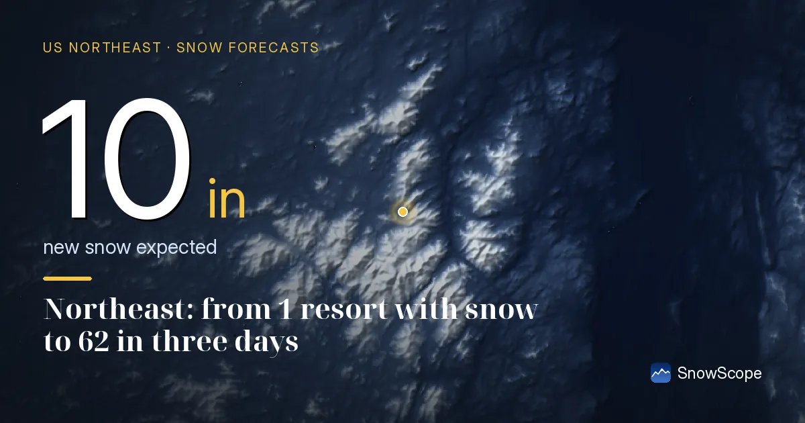

Northeast: from 1 resort with snow to 62 in three days
Only one resort in the Northeast has measurable snow today, but our forecast for the next three days shows this will change fast. Around 10 in (25 cm) of new snow will fall across the region, and by 13 November, 62 resorts will have cover to measure.
See the live snow forecast for North County School in the SnowScope appSnow depth, powder alerts and the 3D map, free.
From bare ground to measurable cover
This is a dramatic shift. Right now, snow covers just 110 square kilometres across the Northeast, with only one resort having measurable depth on upper slopes. By 13 November, the forecast model shows snow cover expanding to 32,810 square kilometres across the region, reaching 62 resorts.
As a hydrologist, I track this change because it represents new water entering the mountain system. Early-season accumulation like this feeds streams and helps fill reservoirs through the winter.
| Resort | Snow depth | New snow, 72 h | Coming, next days | Top |
|---|---|---|---|---|
| North County School | 0 in (0 cm) | 0 in (1 cm) | 10 in (25 cm) | – |
| Stratton | 0 in (0 cm) | 0 in (1 cm) | 10 in (25 cm) | 3,881 ft (1,183 m) |
| Whiteface Mountain | 0 in (0 cm) | 2 in (6 cm) | 9 in (24 cm) | 4,373 ft (1,333 m) |
| Gore Mountain | 0 in (0 cm) | 0 in (0 cm) | 9 in (23 cm) | 3,583 ft (1,092 m) |
| Killington Resort | 0 in (0 cm) | 0 in (1 cm) | 8 in (21 cm) | 4,140 ft (1,262 m) |

Where the most snow will fall
The highest resorts will capture the most snow. Whiteface Mountain, rising to 4,370 ft (1,333 m), is forecast to receive around 9-10 in (24 cm). Stratton, with its top at 3,880 ft (1,183 m), is forecast to get 10 in (25 cm)—the highest in the region. Gore Mountain will see 9 in (23 cm), and Killington Resort 8 in (21 cm).
Even resorts at lower elevations will gain measurable cover. The distribution matters: higher peaks store more water because they sit where clouds squeeze out moisture and temperatures stay cold enough for snow rather than rain.
The key dates: heaviest snow on 12 and 13 November
Most of the snow arrives in a concentrated window. On 12 November, Whiteface Mountain is forecast to gain 4 in (11 cm), Gore 4 in (9 cm), and Stratton 3 in (7 cm). The heaviest falls on 13 November: Stratton climbs to 7 in (18 cm), Whiteface gains 5 in (12 cm), and Gore reaches 6 in (14 cm).
This timing matters because we need to know when meltwater will swell streams and when reservoirs will refill. The system itself will cool the mountains as it moves through, so the snow that falls on the 13th is more likely to stay on the ground.
Height and freezing levels shape the snow field
At every resort, the mountains' upper slopes win the race for snow depth. Take Whiteface Mountain: the top at 4,370 ft (1,333 m) will collect roughly 6 in (14 cm) over the next week, but the base at 1,220 ft (372 m) gets only 2 in (4 cm).
This difference is driven by freezing levels—the height where rain turns to snow. On 11 November, the freezing level at Whiteface sits between 2,460 ft (750 m) and 3,150 ft (960 m), so precipitation falls as rain lower down and snow higher up. By 12 November, the freezing level dips to between 2,300 ft (700 m) and 4,360 ft (1,330 m). These numbers tell us where water stays solid and where it runs off to the valleys. For skiers, they mean upper runs will have better snow.
Early snow is thin and rocky
Early in the season, every inch matters, but it also comes with limits. At these resorts, the typical depth on 10 November is less than half an inch (1 cm or less). So 8-10 in (20-25 cm) is real accumulation.
However, early-season snow is often patchy and thin enough that rocks poke through. This is why measurement here is tricky: depth sensors and observers must account for areas where snow has not settled evenly. We watch closely because this first pulse tells us if the season will build momentum or sputter.
Tips for skiers
- Head to the highest resorts if you want the most snow. Whiteface Mountain at 4,370 ft (1,333 m) will have roughly three times the depth of snow at its base at 1,220 ft (372 m).
- Plan your trips for 13 November if possible. The heaviest snow arrives that day: Stratton gains 7 in (18 cm), Gore 6 in (14 cm), Whiteface 5 in (12 cm).
- Early-season snow is thin. At base elevations, depths reach only 2-3 in (4-8 cm). Rocks hidden below are common, so stick to groomed trails and avoid steep terrain until more snow piles up higher.
- New snow on a thin base can be unstable. Check official avalanche forecasts before heading into steep off-piste terrain.
- North and east-facing upper slopes will hold snow longer. As days warm after the storm, these shaded aspects preserve cover while south-facing slopes start to soften.
About these numbers
Resort snow depths are the deepest snow on the resort's upper slopes from the SnowScope snow model (about 1 km, run of 10 November); they are estimates for an area, not a measurement at one point. Station values are measurements on the date shown. Forecasts can change. Always read the official avalanche bulletin before going off-piste.
Official avalanche bulletins: Mount Washington Avalanche Center
Cite this report
For research, teaching or the press: the numbers and charts are free to reuse under CC BY 4.0 with this citation.
SnowScope (2026), Northeast: from 1 resort with snow to 62 in three days, https://snowscope.app/blog/en/2026/11/us-northeast-north-county-school-snow-forecast-10-november-2026.html, accessed 2026-11-10
SnowScope (Atlas Labs). (2026, November 10). Northeast: from 1 resort with snow to 62 in three days. SnowScope snow reports. https://snowscope.app/blog/en/2026/11/us-northeast-north-county-school-snow-forecast-10-november-2026.html
BibTeX
@misc{snowscope2026usnortheastnorthcountysc,
author = {{SnowScope (Atlas Labs)}},
title = {Northeast: from 1 resort with snow to 62 in three days},
year = {2026},
month = nov,
howpublished = {\url{https://snowscope.app/blog/en/2026/11/us-northeast-north-county-school-snow-forecast-10-november-2026.html}},
note = {Published 2026-11-10 17:24 UTC; accessed 2026-11-10}
}· CC BY 4.0 · Methods, data and tools →
North County School: snow and temperature by height, this winter vs last (tools) →
Follow North County School
Free: a message when fresh snow is coming, and the forecast every morning.
More snow reports

As of 13 November, Killington's 12 cm is ahead of 42 past winters at this date; peak weeks typically arrive weeks 9, 11, and 10.

Mad River Glen, Vermont: natural snow, about 30 in (75 cm) at the usual peak at mid-mountain over 46 past winters, February deepest. Three ways to plan a day there.

A practical kit list for Stowe, Vermont: layers, face cover, goggles, sharp edges and hand warmers, tied to the snow of 46 past winters on Mount Mansfield.